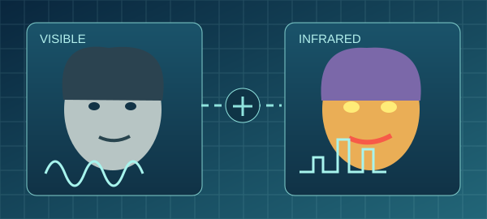

01 / 06

Affective computing
Multimodal Emotion Recognition & VIRI
What can a computer learn about emotion from more than one signal? My doctoral research combined speech with visible and infrared facial imagery and led to the VIRI database.
Research · Computer vision